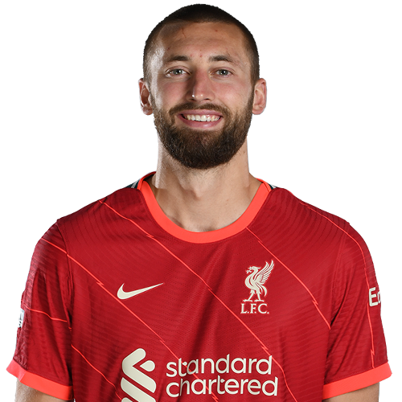

- Дата рождения: 08 июля 1991
- Гражданство: Нидерланды
- Амплуа: защитник
- Номер игрока: 4
- Подписан: 2018
- Появлений за клуб: 138
- Голы: 13
- Дата рождения: 25 мая 1999
- Гражданство: Франция
- Амплуа: защитник
- Номер игрока: 5
- Подписан: 2021
- Появлений за клуб: 2
- Голы: 0
- Дата рождения: 23 марта 1997
- Гражданство: Англия
- Амплуа: защитник
- Номер игрока: 12
- Подписан: 2015
- Появлений за клуб: 126
- Голы: 0
- Дата рождения: 12 мая 1996
- Гражданство: Греция
- Амплуа: защитник
- Номер игрока: 21
- Подписан: 2020
- Появлений за клуб: 12
- Голы: 0
- Дата рождения: 11 марта 1994
- Гражданство: Шотландия
- Амплуа: защитник
- Номер игрока: 26
- Подписан: 2015
- Появлений за клуб: 183
- Голы: 5
- Дата рождения: 08 августа 1991
- Гражданство: Камерун
- Амплуа: защитник
- Номер игрока: 32
- Подписан: 2016
- Появлений за клуб: 131
- Голы: 6

- Дата рождения: 21 марта 1997
- Гражданство: Англия
- Амплуа: защитник
- Номер игрока: 47
- Подписан: 2016
- Появлений за клуб: 21
- Голы: 1
- Дата рождения: 07 октября 1998
- Гражданство: Англия
- Амплуа: защитник
- Номер игрока: 66
- Подписан: 2016
- Появлений за клуб: 185
- Голы: 10
- Дата рождения: 13 апреля 2001
- Гражданство: Уэльс
- Амплуа: защитник
- Номер игрока: 76
- Подписан: 2019
- Появлений за клуб: 25
- Голы: 0